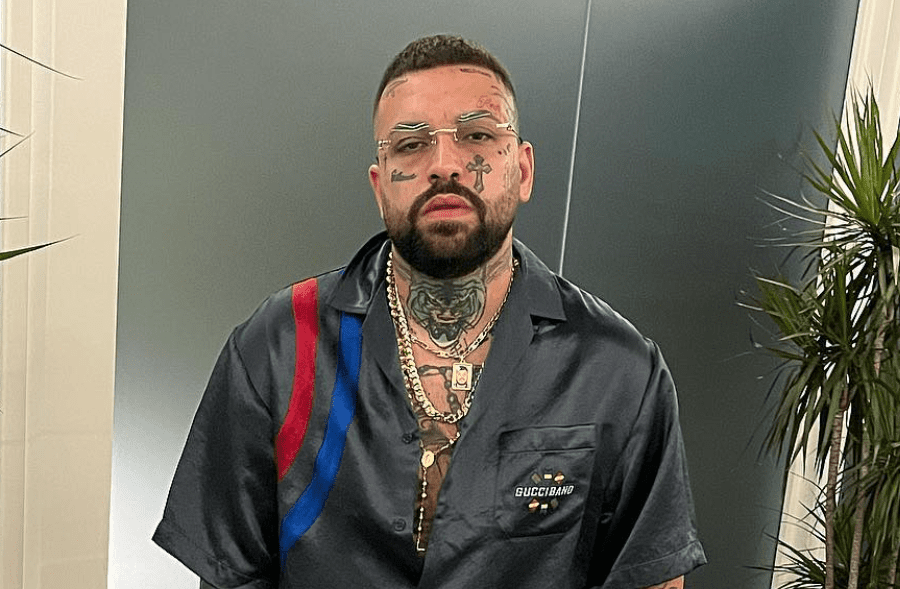
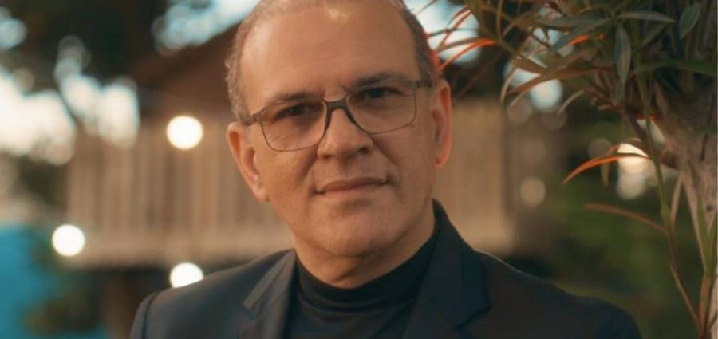
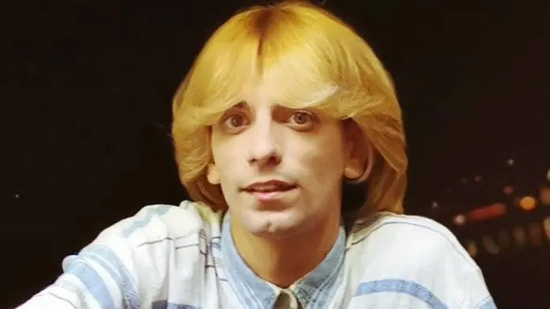
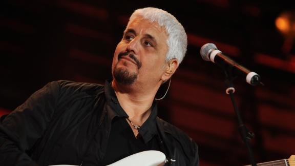
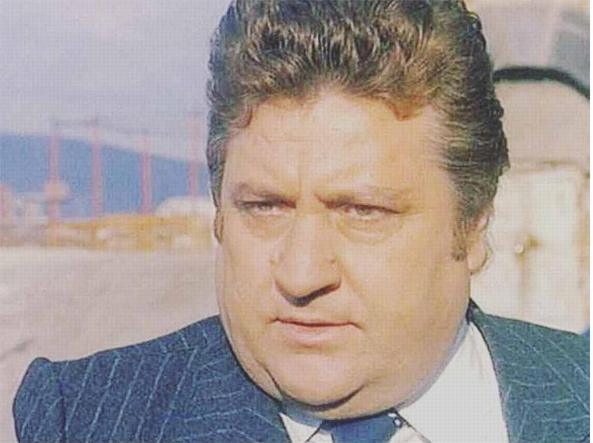

Octavian Dragos Russo Ultimo aggiornameto: oggi
Dalla musica neomelodica a quella trap. Un cambiamento artistico determinato da uno personale, interiore, dopo l’esperienza che lo ha cambiato e da cui si è riscattato. E’ la storia di Vincenzo Pandetta, in arte Niko Pandetta, ex neomelodico classe 1991 travolto puntualmente dalle polemiche per aver dedicato una canzone allo zio Salvatore Cappello, boss catanese al 41 bis dal 1993.
Gianni Celeste si è avvicinato alla musica da piccolo, ascoltando le canzoni di Mario Trevi e successivamente quelle di Nino D'Angelo.[1] Ha debuttato nel 1985 con Ricordo d'estate, contenente i suoi primi dieci brani da cantautore che ha registrato mentre lavorava come meccanico.[2] Il disco ha venduto 150 000 copie
Nino D'Angelo è il primo di sei figli: a lui sono seguiti Giuseppe, Gennaro, Concetta, Dora e Milena D'Angelo. Di padre operaio (Antonio) e madre casalinga (Emilia), nasce a Napoli, nel quartiere di San Pietro a Patierno, quartiere della periferia nordorientale di Napoli, ma cresce nella confinante Casoria; ebbe un'infanzia molto difficile e, a causa delle condizioni economiche della sua famiglia, lasciò presto la scuola e iniziò a lavorare come commesso in un negozio di scarpe. Subito dopo saltuariamente come cantante ai matrimoni e come gelataio alla stazione di Napoli Centrale.
Giuseppe Daniele, detto Pino (Napoli, 19 marzo 1955 – Roma, 4 gennaio 2015), è stato un cantautore, chitarrista e compositore italiano. Chitarrista di formazione blues, è stato, a cavallo degli anni settanta e ottanta, uno dei musicisti più innovativi del panorama italiano.[4] In oltre quarant'anni di carriera ha collaborato con numerosi artisti di prestigio tra i quali: Franco Battiato, Francesco De Gregori, Lucio Dalla, Ralph Towner, Yellowjackets, Mike Mainieri, Claudio Baglioni, Danilo Rea e Mel Collins. Nel corso degli anni ha presenziato e suonato in molti palcoscenici di rilievo come al Festival di Varadero a Cuba e al teatro Olympia di Parigi. Tra le sue varie esibizioni dal vivo, annovera, inoltre, collaborazioni con artisti di fama internazionale come Pat Metheny, Eric Clapton, Chick Corea, Robert Randolph, Bob Berg e Joe Bonamassa.
Mario Merola (Napoli, 6 aprile 1934 – Castellammare di Stabia, 12 novembre 2006) è stato un cantante, attore, compositore, musicista e personaggio televisivo italiano. Tra i più noti attori e cantanti partenopei, Mario Merola è stato soprannominato il Re della sceneggiata per essere riuscito a dare a questo genere tipicamente regionale una popolarità e una dimensione mondiale e un successo sconosciuto prima, fino a farne un genere cinematografico, rappresentando tutto questo anche fuori dal palcoscenico, riuscendo così a dare un volto alla sceneggiata.
